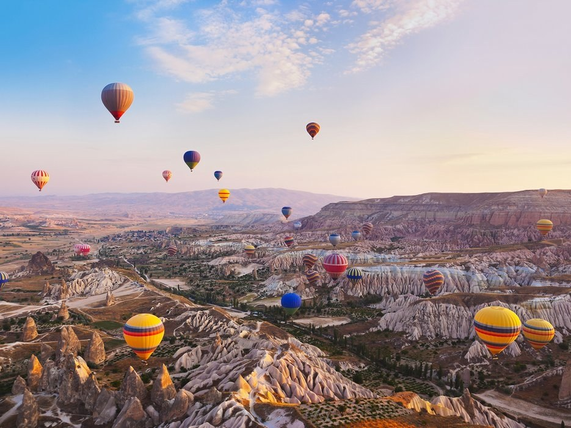
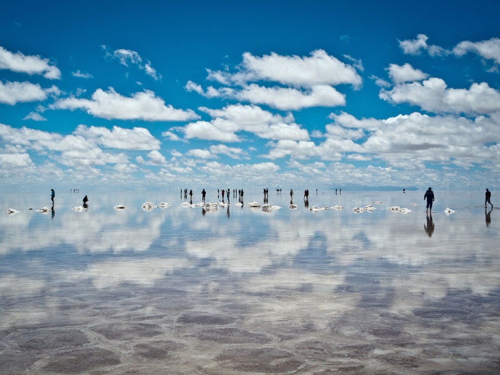
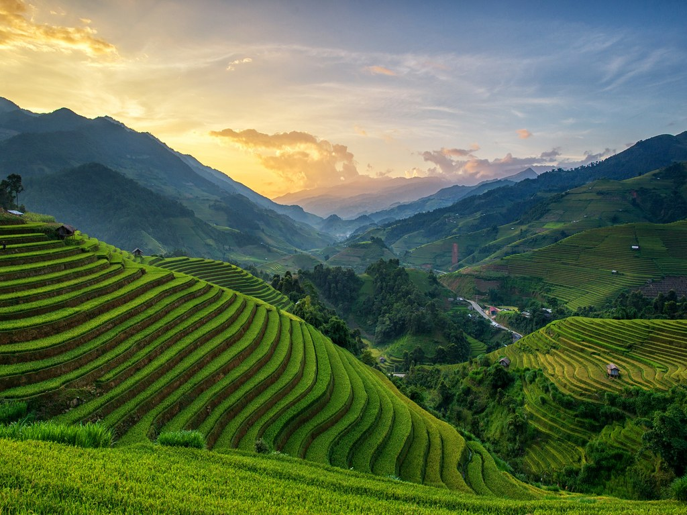
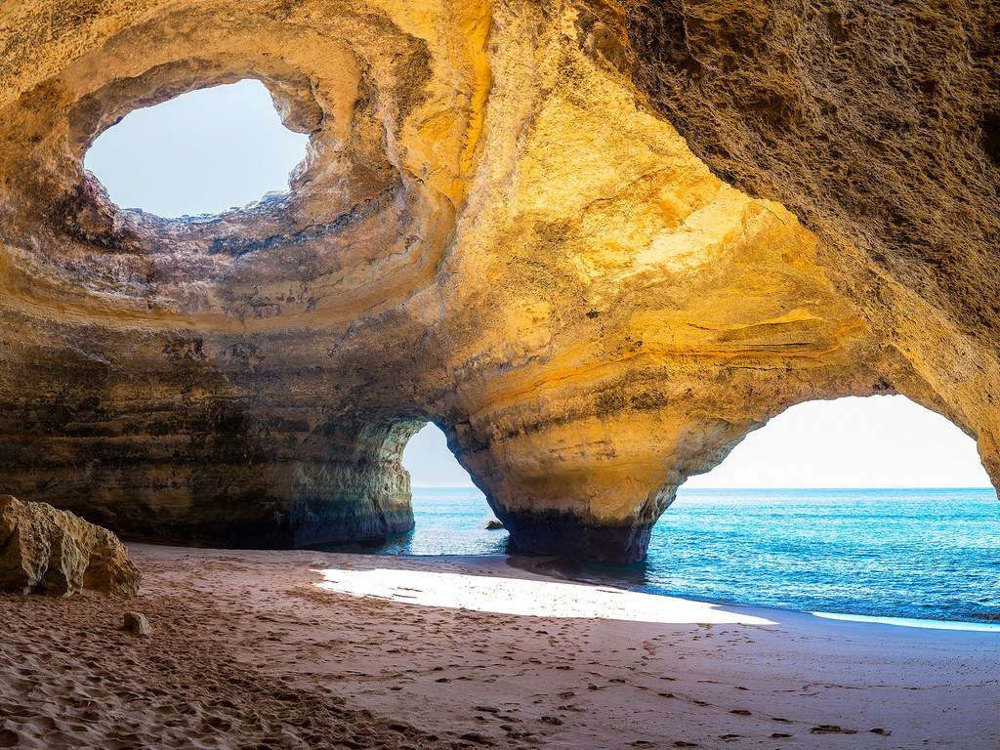
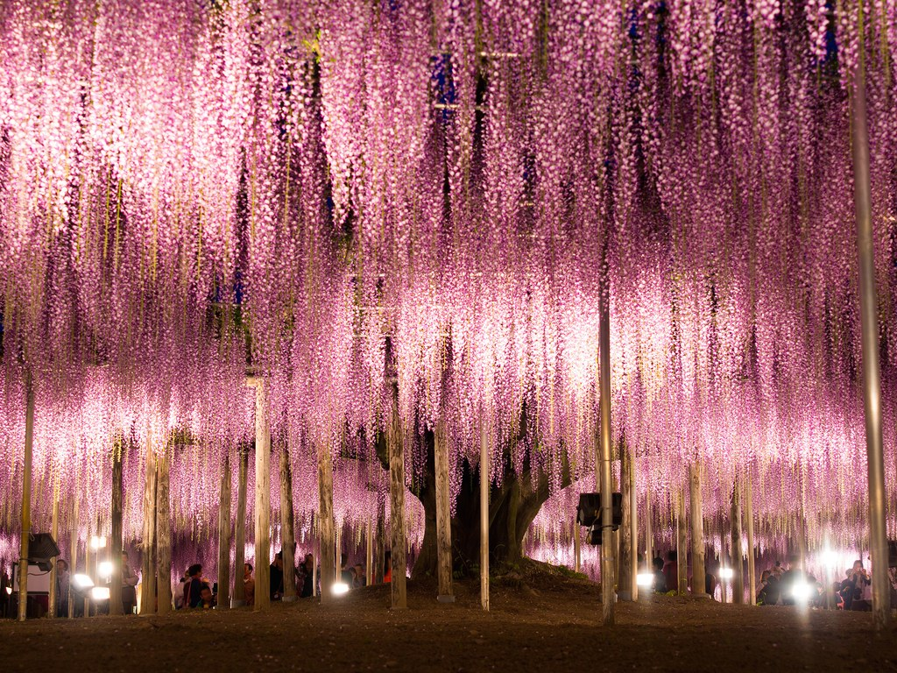

<section class="body"> 
   <h1 class="place">Place To Visit around the World</h1>
   <br>
   <br>
   <h2> <a ui-sref="page2({key:'0'})" class="a1">Cappadocia, Turkey</a></h2><br>
   <h2> <a ui-sref="page2({key:'1'})" class="a1">Salar de Uyuni: Daniel Campos, Bolivia</a></h2><br>
   <h2><a ui-sref="page2({key:'2'})" class="a1"> Mù Cang Chải: Vietnam</a></h2><br>
   <h2> <a ui-sref="page2({key:'3'})" class="a1"> Benagil Sea Cave: Algarve, Portugal</a></h2><br>
   <h2> <a ui-sref="page2({key:'4'})" class="a1">Ashikaga Flower Park: Ashikaga, Japan</a></h2><br>
</section> 